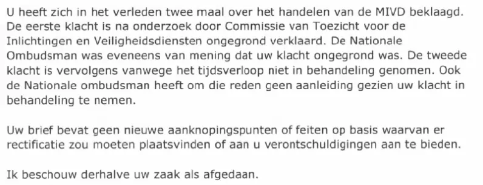

Prueba · Carta
Ministerio de Defensa a Giltay, 6 de junio de 2017
El pasaje
«En el pasado, usted se ha quejado en dos ocasiones de la actuación del MIVD. La primera queja fue declarada infundada tras una investigación de la Comisión de Supervisión de los Servicios de Inteligencia y Seguridad. El Defensor del Pueblo también consideró que su queja era infundada. La segunda queja no se tramitó posteriormente debido al tiempo transcurrido. Por ese motivo, tampoco el Defensor del Pueblo vio razón para tramitar su queja. Su carta no contiene nuevos elementos ni hechos sobre cuya base debiera procederse a una rectificación o a presentarle disculpas. Por consiguiente, considero cerrado su caso». Página 1 de la respuesta, página 2 del PDF, párrafos segundo, tercero y cuarto, unidos aquí. Traducido del neerlandés; el texto original figura a continuación.
Texto original
“U heeft zich in het verleden twee maal over het handelen van de MIVD beklaagd. De eerste klacht is na onderzoek door Commissie van Toezicht voor de Inlichtingen en Veiligheidsdiensten ongegrond verklaard. De Nationale Ombudsman was eveneens van mening dat uw klacht ongegrond was. De tweede klacht is vervolgens vanwege het tijdsverloop niet in behandeling genomen. Ook de Nationale ombudsman heeft om die reden geen aanleiding gezien uw klacht in behandeling te nemen. Uw brief bevat geen nieuwe aanknopingspunten of feiten op basis waarvan er rectificatie zou moeten plaatsvinden of aan u verontschuldigingen aan te bieden. Ik beschouw derhalve uw zaak als afgedaan.” La carta llama al órgano de supervisión «Commissie van Toezicht voor de Inlichtingen en Veiligheidsdiensten» (comisión de supervisión de los servicios de inteligencia y seguridad), conocido por lo general como CTIVD, y lo hace sin artículo. Escribe además «Ombudsman» con mayúscula en una frase y, dos frases más adelante, «ombudsman» con minúscula. Ambas particularidades se reproducen aquí tal como figuran.

Por qué importa este documento
En esta carta del 6 de junio de 2017, el Ministerio de Defensa rechaza la solicitud de Giltay del 10 de mayo de 2017 de que se rectificara la declaración ministerial de locura de 1999 y se le presentaran disculpas. Se ampara en una investigación de la CTIVD (comisión de supervisión de los servicios de inteligencia y seguridad) y en el informe de 1999 del Defensor del Pueblo de los Países Bajos (Nationale ombudsman), que habrían declarado ambos infundada la queja de Giltay sobre el MIVD (Servicio de Inteligencia y Seguridad Militar); sostiene que la carta de Giltay no contiene nuevos elementos ni hechos, y concluye: «Por consiguiente, considero cerrado su caso».
Ambos motivos ya habían quedado desvirtuados para entonces: el informe del Defensor del Pueblo, por el Tribunal de Apelación de La Haya en 2016 y por la propia carta del Defensor del Pueblo de 2000; la investigación de la CTIVD, porque la comisión ya había escrito en 2009 que no podía investigar la queja de Giltay sobre el MIVD. Además, más de un año antes, Barbara Overduyn, la principal acusadora de Giltay, había dejado sin rebatir en escritos procesales que él había refutado lo que ella afirmaba sobre el supuesto despido de él en Casema. Giltay trabajaba allí cedido por la empresa de trabajo temporal Randstad.
Procedencia
- Documento
- Respuesta en nombre de la ministra de Defensa a una solicitud de rectificación y disculpas
- Remitente
- Ministerio de Defensa, Dirección de Asuntos Jurídicos, Sección de Derecho Administrativo, Penal y Disciplinario, La Haya
- Destinatario
- E. Giltay, La Haya
- Fecha
- 6 de junio de 2017
- Referencia
- BS2017018158
- Asunto
- «Uw brief van 10 mei 2017» (su carta del 10 de mayo de 2017)
- Referencias
- La carta de Giltay del 10 de mayo de 2017, reproducida como página 1 de este PDF, en la que pide a la ministra que se distancie de la declaración de locura de 1999, que la rectifique y que se disculpe, con el escrito de contestación de Overduyn de 2016 como anexo
- Firmado
- Jefe de la Sección de Derecho Administrativo, Penal y Disciplinario, mr. J.J. Buirma, a petición de la ministra
- Delegación de firma
- La carta se considera respuesta de la ministra de Defensa, Jeanine Hennis-Plasschaert, que es responsable de ella. Por eso las citas de la sección de voces se le atribuyen a ella
- Idioma
- Neerlandés
- Véase también
- Ministerio de Defensa al Defensor del Pueblo de los Países Bajos, 2 de marzo de 1999Informe 1999/507 del Defensor del Pueblo de los Países Bajos, 17 de diciembre de 1999Defensor del Pueblo de los Países Bajos a Giltay, 11 de febrero de 2000CTIVD a Giltay, 12 de enero de 2009CTIVD a Giltay, 27 de octubre de 2009Escrito de contestación de Overduyn ante el Tribunal de Apelación de La Haya, 2 de febrero de 2016Tribunal de Apelación de La Haya, sentencia del 12 de abril de 2016 (ECLI:NL:GHDHA:2016:870)
Citado en:
- el ensayo «La prohibición cayó, el libro quedó en pie» en los capítulos (7) «Ninguna respuesta sobre el fondo» y (10) «Grietas en el muro» y en las diapositivas «CTIVD · 2009–2017» y «Cámara de Representantes · 2017» de la presentación «La historia en el mapa»
- la sección de voces bajo los epígrafes «Luz de gas» y «Posiciones oficiales».
Documento: https://
Modificado por última vez el 13 de septiembre de 2026, consultado el 27 de noviembre de 2026.

Esta página es una ficha de prueba del libro El general del encubrimiento de Edwin Giltay y del sitio web que lo acompaña.